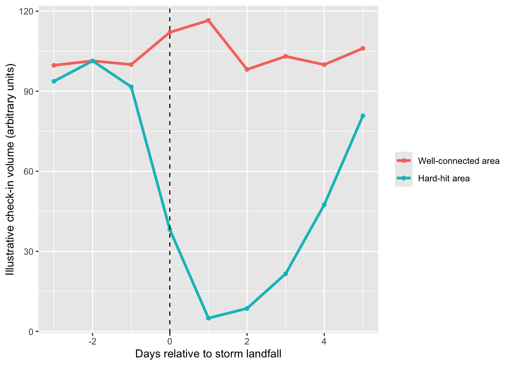
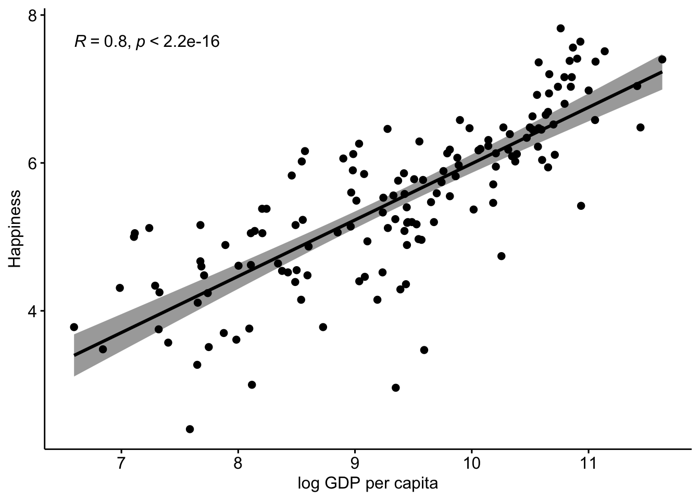
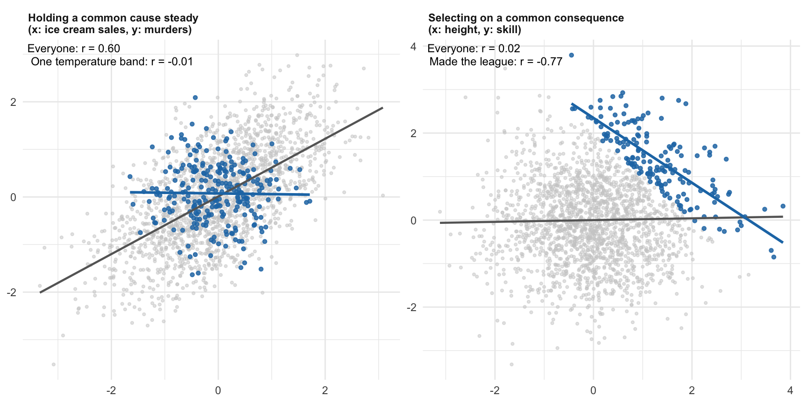

Chapter 4 Causation
This chapter supplements the content in Lecture 4.
Every chapter so far has been building toward a question this one finally asks directly: when two things seem to appear together, or somehow to be related or associated, what would it actually take for us to say that one causes the other?
Start with a claim you’ll meet constantly once you leave this course: a company runs a sales-training programme, and afterwards, salespeople who scored higher on the training assessment also post higher sales numbers. Training works — right?
Maybe. But notice what that claim is doing. It’s drawing an arrow: training score → sales performance. One thing causing another. And the honest first question about any arrow like that isn’t “is the correlation strong enough?” — it’s “what’s actually at the other end of it, and is anything else pointing in?”
Here’s a trick worth keeping, because you’ll use it constantly from here on: a variable is endogenous if something else in your explanation points into it — if it’s being explained. In other words, it appears at the end of an arrow in a diagram. It’s exogenous if nothing is — if it’s just a starting point you’re taking as given. The easiest way to remember which is which: the end of an arrow points into the endogenous variable. I genuinely came up with that myself, and no one else has ever found it as satisfying as I do, but it’s yours now too.
In the training example, sales performance is what we’re trying to explain — arrow pointing in, endogenous. Training score is what we’re using to explain it. But is training score really where the story starts? Or is something else pointing into that too — something that also has its own arrow running straight to sales performance, independent of training altogether?
That’s an example in microcosm of the whole problem this chapter is about. The question is “have I actually found the arrow I think I’ve found, or am I mistaken? For example, have I mistaken two effects of the same cause for one thing causing the other?” Sometimes the honest answer is genuinely hard to reach. Occasionally, someone reaches it anyway, against a famous opponent, with nothing but the strength of their argument. That’s where we’ll start.
4.1 Confounding
4.1.1 The Cornfield Test
By the late 1950s, the evidence linking smoking to lung cancer was overwhelming in one specific sense: smokers were getting lung cancer at roughly nine times the rate of non-smokers. Not a modest bump — ninefold.
And yet Ronald Fisher — one of the most important statisticians who ever lived, a genuine giant of the field — spent his final years arguing, in print, that this proved nothing about causation. His alternative: some unmeasured (e.g. genetic) factor might make a person both more likely to smoke and more likely to develop lung cancer. That would mean no causal arrow between smoking and cancer at all — just two effects of the same hidden cause. Fisher wasn’t a crank. He was applying a rule this whole chapter is going to keep insisting on: correlation isn’t causation, and a third variable can produce exactly this pattern. He was right that it could.
Jerome Cornfield’s answer wasn’t to argue Fisher’s logic was wrong, because it wasn’t. But to ask a sharper question: how big would this hidden factor have to be? For a confounder to fully explain away a ninefold relationship, it isn’t enough for it to be loosely associated with smoking and loosely associated with cancer. It has to be at least as strongly tied to smoking as smoking is to cancer, and at least as strongly tied to cancer as smoking is to cancer. Both bars, not one. Let’s look at this visually.

Below and to the left of both dashed lines, a candidate confounder simply can’t do the job — it isn’t strongly enough tied to both smoking and cancer to produce a ninefold relationship on its own. Above and to the right of both, it isn’t mathematically ruled out — but now you have to actually name a real factor that’s this strongly linked to becoming a smoker and this strongly linked to cancer, independently of smoking itself.
Here’s what happens when you actually go looking. The closest thing to Fisher’s hypothesised factor that modern genetics has found is a variant near the CHRNA5 nicotine-receptor gene: three independent genome-wide studies linked it to roughly a 30% increase in lung cancer risk (RR ≈ 1.3). A related genetic marker had separately been linked to nicotine dependence (Saccone et al., 2007), but Amos and colleagues (2008) found only weak, inconsistent evidence that their own variant affects smoking behaviour directly — and, in their UK sample, no elevated cancer risk at all among people who’d never smoked, hinting the gene’s effect may run specifically through smoking rather than sit independently upstream of it, in the way a genuine confounder would need to. Even on the most generous reading then, it’s real and replicated, but still nowhere near either bar.
Radon gas is a genuine lung cancer risk factor — high residential exposure raises risk by roughly 50–60% (RR ≈ 1.5–1.6 see Heinzl & Scholz-Kreisel, 2024) — but has essentially no relationship to who smokes (RR ≈ 1). Occupational asbestos exposure lands in almost the same place: RR ≈ 1.6 for lung cancer (Goodman et al, 1999), no meaningful link to smoking status. Heavy drinking is the mirror image — heavy drinkers are roughly four times more likely to smoke than light or non-drinkers (RR ≈ 4 see Garnett et al., 2022) — but alcohol’s own independent effect on lung cancer, once smoking is separated out, is essentially null (RR ≈ 1.1, not statistically significant, see Bagnardi et al., 2011). Four real, well-studied factors, marked on the plot above, four different ways of falling short. Not one of them gets remotely close to doing the job Fisher’s argument needed. The point isn’t that clearing both bars is impossible. It’s that nobody, in over sixty years, has ever produced a real candidate that gets close.
Nobody has ever found that factor. Fisher never named one. The argument didn’t kill the possibility of confounding — it just showed exactly what confounding would need to look like, and let the silence answer the rest.
This kind of reasoning got a name and a formula decades after Cornfield: the E-value (VanderWeele & Ding, 2017), the minimum strength a confounder would need with both the exposure and the outcome to fully explain an observed relationship away, on its own — one number instead of two bars to check. It’s simple enough to work out yourself: \(E = RR + \sqrt{RR(RR-1)}\). Run the smoking figure through it: \(E = 9 + \sqrt{9 \times 8} \approx 17.5\). Notice that’s higher than 9 — the precise version of Cornfield’s argument sets the bar even further out of reach than his own simplified statement did.
Management research rarely reports risk ratios — you’ll see correlations and standardized regression coefficients instead. The same test still works: a correlation (or a standardized coefficient) plugs directly into \(RR \approx e^{0.91r}\) (Mathur & VanderWeele, 2020; VanderWeele, 2017), and from there, the same formula as above. Take r = 0.3 — a correlation many reviewers would treat as a genuinely strong finding. RR ≈ 1.31, E-value ≈ 1.96. A confounder barely stronger than the effect itself would fully explain it away. Compare that to smoking’s 17.5, and you get a real sense of how differently “solid” two published findings can actually be, even when both get called significant.
It’s worth keeping this formula, because you’ll meet plenty of causal claims that don’t hold up nearly this well once you check. Next time a headline reports a relative risk — or a paper reports a correlation — this is the one-line test for how seriously to take it.
4.1.2 The Everyday Version
You won’t often get to run an argument as tight as Cornfield’s yourself — it took decades, a real historical dataset, and the simple fact that nobody ever found the missing factor. But the everyday version of watching a confound do its work doesn’t need any of that. It shows up anywhere you have the data and don’t think to check.
You’ve probably met the classic case already, possibly at a dinner party where someone was showing off. Across US cities, ice cream sales and murder rates rise and fall together — and not weakly, either. Plot one against the other and you’ll get a relationship strong enough that if you’d found it in your own data, you’d be drafting the abstract. This isn’t a made-up example either — Tyler Vigen’s Spurious Correlations project puts the real figure at r = 0.715 across US data from 1990–2021 (https://tylervigen.com/spurious/correlation/9632_ice-cream-consumption_correlates-with_violent-crime-rates).
Nobody thinks ice cream causes murder. The obvious culprit is temperature: hot weather means more people buying ice cream, and — for reasons criminologists actually take seriously — more violent crime too. Ice cream and murder never talk to each other. They’re each just reacting to the same third thing.
That’s a confounder: a variable that causes both of the things you’re looking at, with no arrow running between them at all. And here’s what makes it worth more than a paragraph — we can simulate exactly this, watch the correlation appear, and then watch it disappear.

## [1] 0.7137528There’s the strong relationship, and it’s entirely manufactured — neither variable had any effect on the other anywhere in that code. Both were generated purely from Temp, city-months’ average monthly temperature. Now let’s split the sample into cold, mild, and hot months, and look again within each band.

## Cold Mild Hot
## 0.053207223 -0.009546515 0.067120654Not weakened. Gone. Within each band the correlation is close enough to zero to be noise. Nothing about ice cream or murder changed; we just stopped letting temperature do the confounding.
Suppose a well-meaning HR department rolls out a wellbeing programme, and a year later, teams that spent more per head on it are visibly more productive. It’s tempting to write the business case right there.

## [1] 0.4463021But run the same check first. Departments with bigger budgets can afford both better wellbeing programmes and better everything else: staffing, tools, time.

## Low Med High
## -0.006996962 0.046068957 -0.031799717Split by department resourcing, and the wellbeing–productivity relationship folds up exactly the way ice cream and murder did. A lot of strategy concepts are likely to fall prey to this type of confounding. Companies with more resources can spend money on ‘cool strategy idea x’ as well as all the stuff we already know makes firms successful.
Confounding is a story about a third variable doing its work invisibly behind two others. Selection bias is stranger still — because sometimes there isn’t a third variable at all. The relationship gets built entirely by how the sample was assembled.
4.2 Selection Bias
4.2.1 All the Data Isn’t All the Data
Here’s the plainest version, and can happen right in your classroom. If I ask everyone in my PhD Quant Methods class a question — say, how satisfied are you with the course so far — and I use their answers to draw a conclusion about the whole cohort, I’ve made an error before I’ve even started analysing anything. The students didn’t choose to be in the sample by accident. They came to this specific class, at this specific time, for a reason, which makes them systematically different from the people who didn’t. Maybe more conscientious. Maybe just better at reading a timetable. Either way, whatever I conclude from the room doesn’t automatically generalise to everyone I’m claiming to describe.
That much is intuitive once it’s pointed out — nobody’s surprised that a self-selected sample is biased. What catches people out is the belief that this problem goes away once you stop sampling and start using “all the data.” A lot of big-data enthusiasm rests on exactly that idea: no sample, no sampling bias, done.
Here’s why I don’t buy it. A 2013 study analysed millions of geotagged Twitter and Foursquare posts to track real-world activity through Hurricane Sandy — genuinely all the check-in data available, not a survey, not a sample. Their headline finding: a spike in nightlife check-ins right after the storm passed, which they read as people celebrating having made it through. Taken at face value, that’s a nice, tidy story, and the paper reports it as evidence their method was picking up something real.
Read it a little more suspiciously, though, and a different story is sitting right there in the same dataset. Check-in activity — on both platforms — comes overwhelmingly from wherever population density and phone connectivity are highest. During Sandy, that wasn’t evenly distributed across New York at all: swathes of Lower Manhattan lost power outright, but Midtown and Upper Manhattan largely didn’t, while the outer boroughs and the Long Island shoreline — hit hardest by flooding and the longest power outages — simply went dark and stopped generating data almost entirely. “All the data” quietly became “all the data from the people whose phones still worked,” and the people whose phones still worked were disproportionately the ones for whom Sandy had been the least disruptive. A “celebration” spike and “the sample skewed toward people having a comparatively normal night” would look identical in a dataset built this way — and only one of those explanations was on the table.
The chart below isn’t a reproduction of their actual figures, but an illustration of the same pattern, built from numbers I’ve made up for the purpose. For the real data and figures, see Grinberg et al. (2013).

To be clear, the original researchers don’t raise the geography question themselves, and their finding is entirely honest as reported. It’s what happens when you take a real published result and ask, on your own, who actually generated this data and whether that’s the population the conclusion is really about. That’s a habit worth having with everything you read, not just this one paper.
That’s selection bias without anyone choosing anything, in the ordinary sense — nobody self-selected into being a well-connected New Yorker with power that night. The selection happened in how the data was collected, not in who volunteered. It’s the same underlying problem wearing a different disguise, and it’s the reason “we have all the data” is a claim worth being suspicious of rather than reassured by.
Sometimes, though, selection bias is more deliberate than either of those cases, and what it does to a relationship is stranger still, because it can manufacture one that was never there at all.
4.2.2 Manufacturing a Relationship from Nothing
Here’s one that should feel more surprising than the last, because there’s no obvious third variable to blame. The surprise is that a relationship shows up at all.
Take height and basketball skill. Across the general population, these two things are essentially unrelated — being tall doesn’t make you more skilled with a basketball, and being skilled doesn’t make you tall. But look only at NBA players, and you’ll find something odd: among people who’ve actually made the league, height and skill are negatively correlated. The shorter players are, on average, the more skilled ones. Michael Jordan wasn’t especially tall for an NBA player. Elite players like Allen Iverson and John Stockton were shorter still. This isn’t a fluke of famous names — it holds up in the data, and it’s been documented both informally (Nylon Calculus, https://fansided.com/2017/12/22/nylon-calculus-nba-draft-selection-bias/) and in the peer-reviewed literature on NBA draft sampling bias.
## [1] 0.00365453## [1] -0.4462717
In the pool of 20,000 draft-eligible prospects, height and skill are unrelated, exactly as we built them to be. Select down to the players good enough or tall enough (or both) to clear the bar, though, and a clear negative relationship appears out of nothing.
Nothing about height or skill changed between “general population” and “NBA players.” What changed is how the sample was built. The NBA doesn’t select on height, and it doesn’t select on skill — it selects on some combination of the two clearing a bar. You can make a roster by being exceptionally tall, or by being exceptionally skilled, but rarely need to be both. Once you only look at the players who cleared that bar, you’re looking at a sample where — among the tall ones, the skill requirement was more negotiable, and among the short ones, it wasn’t. Select on a sum, and you manufacture a relationship between the parts that was never there in the population you drew from.
Now the version with more relevance. A company hiring for a role almost always screens (typically implicitly) on some blend of technical skill and cultural fit — nobody demands maximum on both, but the combination has to clear a bar. In the applicant pool at large, skill and fit have nothing to do with each other.
## [1] 0.04425896## [1] -0.6027258
Among the people who get hired, though, they look negatively related — the highly skilled hires will tend to be the ones who scraped by on fit, and vice versa. If a manager later notices “our most technically brilliant hires are always the awkward ones” and starts wondering whether skill and personality genuinely trade off, they’re not wrong about the pattern they are seeing, they’re wrong about where it came from.
4.2.3 Why selection feels different
Most people find confounding intuitive once it’s pointed out. There’s a culprit, a third variable you can name, like temperature, and the fix is to hold it steady. Selection feels different, and the feeling is right. In the NBA and hiring examples there is no culprit at all. Nothing in the population links height and skill, or skill and fit. The relationship was manufactured entirely by the filter that decided who we got to see.
Here’s the way I find most helpful to think about it. Put the two kinds of demonstration side by side, which is what Figure 4.1 does, with freshly simulated versions of each. In the ice cream example, looking within one band of temperature made a spurious relationship disappear. In the NBA example, looking within the group of people who made the league made a spurious relationship appear. Both times we did essentially the same thing, which was to look at a subset. The opposite results come from where the subsetting variable sits. Temperature is a common cause of ice cream sales and murders, and holding a common cause steady removes a fake link. Making the NBA is a common consequence of height and skill, and holding a common consequence steady creates one. If you read further, you’ll find this called a “collider,” and medics know one version of it as Berkson’s paradox.

Figure 4.1: The same move, opposite results. Left: looking within one band of a common cause (temperature) makes a spurious relationship disappear. Right: looking only at cases that passed a filter depending on both variables (making the league) makes a relationship appear from nothing. Grey: everyone. Blue: the subset.
One uncomfortable implication follows directly. Holding a variable steady by selecting on it and holding it steady statistically are, for this purpose, the same move. So if a researcher “controls for” something that is itself a consequence of both X and Y, they manufacture a relationship in exactly the way the NBA filter did. More control variables are not automatically safer.
It’s also worth knowing that “selection” gets used for two quite different problems. Selection into treatment is about who chooses the thing being studied. Suppose we’re back with the sales training from the start of this chapter, and the most motivated salespeople sign up, and motivated salespeople would have sold more anyway. That is really a confounding problem wearing a selection label, because motivation is the culprit. Selection into the sample is about who ends up in the data at all, and that’s the NBA problem, the one that genuinely behaves differently. Measuring more things doesn’t fix it, and neither does a bigger sample, because the distortion is built into who you’re looking at.
Two clues give selection away. The first is a restricted range. If a variable’s spread in your data is noticeably narrower than it is in the population, something has filtered it, which is exactly the compressed cloud in the NBA plots. The second is a sample defined by an outcome: players who made the league, candidates who were hired. Whenever inclusion depends on how things turned out, it’s worth asking what the missing cases would look like, and whether adding them back would change the relationship.
4.3 Endogeneity
Here’s a useful way to see all three of these threats side by side, because they don’t compete with each other — the same study can be hit by more than one at once, and they often travel together in the same variable pair.
Go back to the sales-training question this chapter opened with: does a training course actually improve sales performance? And, let’s switch it up a bit to the idea that we might observe a negative relationship in the data. How?
Confounding, you’ve already watched at work. Here it’s tenure: more experienced salespeople tend to coast through a mandatory training assessment — they’ve heard it all before, so they don’t try especially hard, and their scores show it — but that same experience is exactly what makes them better at actually selling (or, you could say that salespeople get to have a long tenure in the job because they keep making their numbers…). Leave tenure unmeasured, and part of what looks like “training hurts performance” is really “people who don’t need the training are also the people who are already good at the job”. That’s an arrow pointing into both variables from somewhere you never accounted for.
Reverse causation is a different failure with the same symptom. Maybe training doesn’t cause sales performance at all — maybe sales performance causes how seriously someone takes training. A salesperson who’s already succeeding has no urgency to engage with a mandatory course; someone who’s struggling might throw themselves into it, hoping it turns things around. If that’s what’s happening, the arrow runs backwards from what the study assumed. Your performance level causes your engagement with the training.
Selection bias adds a third route in. If the training course is optional, who actually chooses to do it? Often the people who feel they need it — not the stars. If untrained salespeople outperform the trained group on average, an easy but wrong conclusion is “training makes people worse.” The real explanation is that the people who opted in started from a lower baseline; training might have helped every one of them, and you’d never see it, because the comparison was never fair to begin with.
Here’s the same idea made visual: three simulated datasets, one per mechanism above, each built to produce a similar-looking negative relationship between training score and sales performance — similar strength, similar slope. The spread is a different story, and deliberately so.

Confounding and reverse causation really are that hard to tell apart — same strength, same slope, same scatter. Selection bias gives itself away a little: the third panel is visibly tighter, because restricting the sample to whoever clears a bar doesn’t just distort the relationship, it shrinks the range of data you ever get to see in the first place. That’s a signature of selection effects, though spotting it still depends on already suspecting where to look. Three entirely different mechanisms — an omitted variable driving both sides, an arrow running the wrong direction, a systematically unrepresentative sample — and all three produce the identical statistical symptom: your independent variable ends up tangled up with the very thing you’re trying to explain, the error term.
That symptom has a name — endogeneity — and it’s the word you’ll meet most often if you go on to read (good) empirical papers seriously. It doesn’t tell you which of the three is happening. It just tells you that something is, and that the confident arrow you drew earlier might not be pointing the way you think.
4.4 The Power of Randomisation
So confounding, reverse causation, and selection bias share something important: all three can manufacture a relationship — or hide one — without you doing anything wrong with your statistics. The correlation you calculate is correct. It’s the story you tell about why it’s there that goes wrong.
There’s one design choice that neutralises confounding before you ever reach the analysis stage: randomisation. If who receives a treatment is decided by something like a coin flip, rather than by any pre-existing characteristic, then every confounder — measured or not, thought of or not — ends up, on average, equally represented on both sides of the comparison. Randomisation doesn’t remove confounders. It makes them irrelevant, because they can no longer line up systematically with which group you’re in.
Hold onto that idea. A few chapters from now, you’ll meet a two-study design built around exactly this problem — and you’ll be equipped to see why the second study’s fix actually works before the book explains it.
4.5 Reading the literature
This chapter used deliberately simple tools: splitting data into bands, simulating populations, drawing scatter plots side by side. That was on purpose, because the ideas are hard enough without machinery getting in the way. But when you open a management journal, nobody is banding ice cream sales by temperature. What you’ll find instead, usually near the end of the method section, is a paragraph headed something like “Addressing endogeneity,” followed by a list of techniques you’ve probably never run and may never run. In the lecture I rattle off a few of these names partly to sound clever. Here I want to do something more useful than that.
The aim is for you to read that paragraph with some confidence, even if you couldn’t do any of it yourself. There’s a trick to it. Almost every technique in there is an attempt to solve one of the three problems in this chapter: confounding, reverse causation, or selection. And every one of them works the same basic way. It swaps the assumption “nothing else is going on” for a different assumption that is hopefully easier to believe. So your job as a reader isn’t to check the maths. It’s to ask two questions: which problem is this aimed at, and what is it asking me to believe instead?
4.5.1 Where you’ll meet this
It helps to sort the techniques into four families, because each family has one characteristic assumption, and that assumption is what you’re actually evaluating.
Family one: measure the confounder.
Control variables. “Controlling for firm size, age and industry…” This is the stratification from Section 4.1.2, done inside an equation instead of by splitting into bands. It’s the same logic, and it has the same limit. It only deals with confounders that somebody thought of and then measured. The assumption is that nothing important is missing from the list, and the list is usually in a table you can check.
Matching and propensity scores. These build a comparison group that looks like the “treated” group on the variables that were measured. Papers often show a “balance table” to demonstrate how similar the groups are after matching. Done well, matching is a genuinely solid method, and it has one real advantage over simply adding control variables: it makes the researcher show you how comparable the groups actually are. What it can’t do is make them comparable on anything that wasn’t measured. So read it for what it is: a careful way of dealing with the confounders somebody thought of, with the same limit as control variables.
Family two: use structure in the data.
Fixed effects. Here each firm, person or family is compared with itself. That removes everything stable about the unit, whether it was measured or not, which is genuinely powerful. A firm’s culture, a manager’s personality, a family’s genes: if it doesn’t change during the study, it’s gone. But fixed effects do nothing about things that do change over time, and those are often exactly the things you’d worry about.
Difference-in-differences. This compares how a treated group changed over time with how an untreated group changed. It relies on the two groups having been on parallel paths before anything happened. Good papers show you the pre-treatment trends so you can judge for yourself. If they don’t show you, ask why not.
Family three: find something that moves X from outside.
Instrumental variables (often “two-stage least squares” or 2SLS). The idea is to find something that pushes X around but affects Y only through X. Confusingly, IV here means “instrumental variable,” not the “independent variable” I’ve been abbreviating the same way.
Two things matter. First, the “only through X” part (the exclusion restriction) can’t be tested with the data. It has to be argued. So read the argument, and try hard to think of another route from the instrument to Y. Second, the instrument has to actually move X. Papers report a “first-stage F” to show this, usually against a rule of thumb of 10. It’s a threshold, and as Chapter 11 will argue, thresholds are heuristics, not laws. More recent work suggests that for the usual significance test to behave as advertised, the F may need to be closer to 100 (Lee et al. 2020). You don’t need to settle that argument. Just notice when a paper treats “F > 10” as the end of the conversation.
Control functions. These are increasingly common, especially in marketing, and they’re easier to read than they sound (Petrin and Train 2010). The researcher uses an instrument to predict X. They then take the part of X the instrument couldn’t predict (the residual) and add it to the main model as an extra variable. That leftover part is where the contamination lives. So a control function is, quite literally, a way of turning an unmeasured confounder into a control variable, which puts you right back on familiar ground from family one.
In simple linear models it gives the same answer as 2SLS. Its appeal is that it still works in models where 2SLS gets awkward, such as models of which brand a customer chooses. The key point for you as a reader is that it is not an escape from the instrument. It rests on exactly the same exclusion restriction, so the same questions apply.
Gaussian copulas. These go one step further and need no instrument at all (Park and Gupta 2012). In practice most applications use a control-function version, adding a “copula term” to the model as an extra variable. What replaces the instrument is an assumption about the shape of X’s distribution. The method only works if X is clearly non-normal, and simulation work suggests X needs to be quite strongly skewed for the method to perform well in the sample sizes typical of management research (Becker et al. 2022).
This is where Chapter 3 pays off. Many survey constructs are an average of several Likert items, and such averages will often be much closer to symmetrical than that. So check the descriptives table. If the variable being “corrected” looks roughly normal, the correction is standing on thin ice.
Family four: model who got into the sample.
This family deals with the second kind of selection from Section 4.2.3, the filter problem. It’s worth knowing where that problem hides in management research, because papers rarely announce it. It shows up in who answers surveys, in which firms survived long enough to appear in a database, in which startups got through an investor’s gate, in which employees stayed at a firm rather than leaving, and in which studies got published. That last one is big enough to get its own treatment in Chapter 13.
One caution before going further, because this is exactly where research myths start. A low response rate is not automatically a problem. What matters is whether the people who didn’t respond differ systematically from those who did, in ways connected to what’s being studied. A survey with a modest response rate, where non-response is essentially unrelated to the variables of interest, can tell you more than one with a high response rate, where the people who didn’t reply are precisely the ones the study is about. It’s the same logic as the rest of this chapter: a filter only distorts a relationship if it’s connected to the variables in that relationship.
You’ll meet a handful of responses to it, and it helps to know one piece of vocabulary first. Papers distinguish selection on observables, where inclusion depends on things the researcher measured, from selection on unobservables, where it depends on things they didn’t. The first is the easier problem, and the methods for it carry the same assumption as family one. The second needs something stronger.
Non-response checks. In survey research, especially in marketing, the most common move you’ll see is to compare early and late respondents, on the theory that late ones resemble the people who never replied, and then to conclude from a non-significant difference that non-response bias isn’t a problem. This is almost always cited to Armstrong and Overton (Armstrong and Overton 1977). But it isn’t really what they recommended. Their paper was about estimating and adjusting for non-response bias, not testing for its absence. When Armstrong later checked how the paper had been used, he and his co-author found that 49 of the 50 studies they examined had reported its findings improperly (Wright and Armstrong 2008). The most common error was running a significance test, finding nothing, and concluding that no bias was present, a move you’ll learn to distrust in Chapter 11. So treat the early-versus-late comparison as something that has commonly been done, to questionable effect, not as a solution. A more informative check compares respondents with known figures for the whole population they were drawn from, such as firm size or sector from a database, though it can only check the variables that happen to be available for everyone.
Weighting. This reweights the sample so that it matches the population on known characteristics, counting under-represented cases more heavily. It’s selection on observables, so it fixes only what it can see.
Heckman models. These are the ones you’ll see most often in strategy and management journals (Heckman 1979). They work in two stages. The first stage predicts who gets into the sample. From that it builds an extra variable, usually called the inverse Mills ratio or lambda, which is added to the main model as a correction. If that sounds familiar, it should: it’s the control-function idea from family three, applied to selection instead of to X. It also comes with the same catch. For the method to be trustworthy, the first stage needs at least one variable that affects whether a case is selected but not the outcome itself. That’s an exclusion restriction again. Without one, the correction rests almost entirely on the assumed shape of a statistical distribution, and it can do more harm than good. One review of strategy and organisation theory journals found that only about a third of papers using the method even claimed to have such a variable (Wolfolds and Siegel 2019).
Another review of Heckman models in strategy research found them used increasingly but inconsistently, and made three points worth carrying into any paper you read (Certo et al. 2016). First, selection only biases the result you care about if X itself helps predict who got selected, so look at the first stage. Second, a significant lambda does not by itself show that selection bias exists. Third, Heckman addresses bias from the sample, not other sources of endogeneity, so it isn’t a general-purpose fix.
Treatment-effects and switching models. You’ll sometimes see Heckman invoked to deal with who chose a strategy, such as which firms entered a market or adopted a practice. That’s selection into treatment, which, as the chapter showed, is closer to confounding than to filtering. There are related models designed for exactly that case, usually labelled treatment-effects or endogenous switching models. When a paper says “we used a Heckman correction,” a useful first question is simply: selection into what?
Bounds. Occasionally, rather than correcting the estimate, a paper will report the range of values the true effect could plausibly take, given what’s missing. It’s rare in management and more common in economics. It’s also refreshingly honest when you do see it, because it shows you the size of what we don’t know rather than hiding it.
4.5.2 The connection back
None of these is randomisation. Randomisation is the only design that breaks the link between X and every confounder, measured or unmeasured, without asking you to take anything else on trust. It does this on average across all the random assignments you might have got, not perfectly in any single sample. That’s why randomised studies still report balance and can still get unlucky.
Everything on the list above is closer to randomisation by argument. That’s not a criticism. For most interesting questions in management you can’t randomise, and these methods are how serious people deal with that. But it does mean the quality of the argument is what you’re evaluating, not the name of the technique.
4.5.3 Questions worth asking
- What verb are they using? Results sections say “is associated with.” Discussion sections have a habit of drifting into “drives,” “shapes” or “leads to.” Did the design earn that drift?
- What’s the most obvious third variable? If you can think of one in thirty seconds, is it in the model? If it isn’t, did the authors say why?
- Which family is their fix from, and what does that family assume? Did they argue for the assumption, or just name the method and move on?
- Who is in the sample, and how did they get there? Is this selection into treatment (a confounding problem) or selection into the sample (a filter problem)? Was inclusion decided by an outcome? What would the missing cases look like?
- Did the correction change anything? If the corrected and uncorrected estimates are nearly identical, that could mean endogeneity wasn’t a problem. It could equally mean the correction wasn’t strong enough to find it. Which reading do the authors choose, and what’s their evidence?
- How strong would an unmeasured confounder need to be? You can ask the E-value question even if the authors never computed one.
4.5.4 One red flag
The endogeneity paragraph that reads like a ritual: one technique, one sentence, and “endogeneity was therefore not a concern.” Its most common form is a test. The control-function residual, the copula term or the Heckman lambda is “not significant,” and the authors conclude there’s no endogeneity. As you’ll see in Chapter 11, that doesn’t follow: a non-significant result is an absence of evidence, not evidence of absence. These tests can also be weak, especially with a feeble instrument or a barely skewed variable.
My strong suspicion, and I say this as someone who has been on both ends of the review process, is that a lot of these paragraphs exist because a reviewer asked for them, not because the authors thought hard about their design. A check that the authors never expected to fail isn’t really a check. When you see one, go back to question 2 and do the thinking yourself.
4.5.5 If you want to read more
Two books do this properly and are written for people who want to understand the ideas rather than become econometricians. Both are free to read online. Scott Cunningham’s Causal Inference: The Mixtape (Cunningham 2021) covers every technique in this section with real examples and a good sense of humour. Nick Huntington-Klein’s The Effect (Huntington-Klein 2025) is, if anything, gentler. Its first half builds the concepts almost without equations, and its treatment of colliders and selection is the clearest I know. If you’d rather start with something you can read on a train, Judea Pearl and Dana Mackenzie’s The Book of Why (Pearl and Mackenzie 2018) is a popular account of the same ideas, written by one of the people who developed them. It’s also where much of my own thinking about Cornfield and the smoking debate, earlier in this chapter, came from. Their chapter on it is superb.